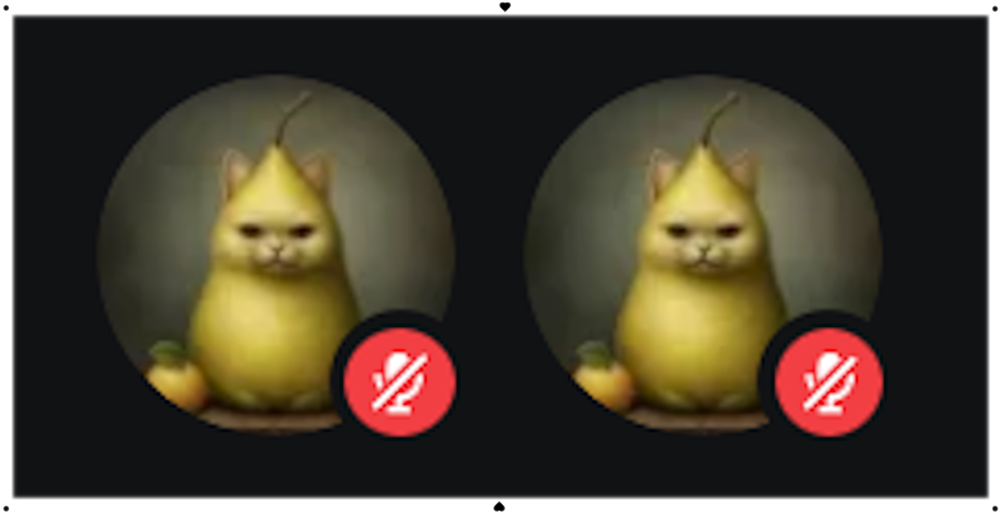

" Eu sei que você já esperava algo assim, afinal, praticamente já virou tradição eu fazer algo especial pra virada de ano, principalmente pra alguém tão especial pra mim quanto você. . "
". .Assim como os outros, tanto eu quanto você temos noção de o quão foi bom este ano, eu posso estar meio equivocado em dizer pra você que talvez esse tenha sido até melhor que o ano passado, mas algo que não estou equivocado nem um pouco, é de dizer e saber que durante esse tempo todo que estivemos juntos. ."
". . Seja em calls. ."
". . Seja jogando. ."
". . Seja até conversando. ."
". . Independente do meio de comunicação ou interação que tivemos nesse ano inteiro, nós continuamos nos falando, e não deixamos em nenhum momento de sorrir um para o outro, e caso tenha acontecido, nós continuamos nos ajudando. Nunca quis deixar de te ajudar em nenhum momento que você precisou, as poucas vezes que eu não pude comparecer para te atender eu não deixei de mandar mensagem e esclarecer a falta da minha presença ali contigo. Sei que para você, querida, eu nunca vou ser e de fato não sou obrigado a estar contigo sempre, porém pra mim tem uma importância muito maior estar aproveitando qualquer segundo que estive disponível para estar com você do que aproveitar aquele tempo com qualquer outra coisa ou pessoa. ."
". . Você por si só nunca deixou de ser quem eu mais amo, adoro e almejo ver o seu sorriso nesse mundo, por isso, eu corro atrás de qualquer resquício de segundo que tenho para aproveitar ele ao seu lado."
". . Eu não vou nunca esquecer cada presente, cada momento, cada risada, e principalmente, cada carinho que compartilhamos, sentimos, e adoramos de um ao outro. Dizer que eu te amo hoje em dia é muito pouco comparado ao que eu realmente sinto Ana, repetindo oque eu sempre digo a você desde o ano passado, você é de fato a melhor pessoa que conheci durante esses anos todos.
". . Você é quem eu quero levar não só pra frente, mas igualmente comigo pra sempre, com todo carinho e amor que eu continuo criando por ti e cada detalhe do seu jeitinho de ser que eu percebo diariamente em você. ."
". . Por mais que para qualquer olhar por fora da nossa bolha, nós só entramos call ou conversamos coisas totalmente bobas, jogamos coisas aleatórias, criamos memes internos ou personagens totalmente zoados que na visão de qualquer outra pessoa não faça sentido nenhum, para mim, isso nunca vai deixar de ser o charme que nós dois possuímos. ."
". . Algo que só você consegue recriar para mim, e só nós dois conseguimos fazer dar certo quando estamos juntos, um sentimento tão bom que nem se quer pode ser comparado a felicidade de tão único e genuíno que ele é. ."
". . Eu agradeço do fundo do meu coração, perfeição, por todo esse tempo que estivemos juntos durante esse ano de 2024 inteiro. ."
". . Assim como o ano passado, eu não vou desconsiderar nada que passamos juntos aqui, eu não preciso nem dizer que foi um privilégio enorme ver suas conquistas, seja seu relacionamento, sua mudança de escola e melhora na qualidade de vida que você tinha na sua escola anterior, e principalmente a sua melhora da depressão, onde eu fiquei muito, mas muito feliz mesmo de saber que você esteve melhorando tanto, ao nível de não precisar mais tomar os anti-depressivos e agora já estar muito melhor comparado a como era antes. Eu dou esse brinde enorme não só para as suas conquistas, mas também para todos os infortuneos eventos que você teve que aguentar para estar aqui hoje, eu nunca deixo de ressaltar que você é alguém determinada e forte querida, e não é atoa, com tudo que você passou e com tudo que veio ocorrendo, eu vejo muito mais do que resiliência em você, você é alguém de fato que merecia um prêmio por tudo que você teve que aguentar, por isso, eu até o momento quero tentar o meu melhor para ver você sorrir, mesmo que eu seja só um bobalhão que as vezes te faz dar umas risadas, eu não deixo de reconhecer cada medalha que você alcança quando chega na linha de chegada."
" Como eu disse anteriormente, eu não pretendo nunca parar de guardar você dentro do meu coração, assim como
nunca vou deixar, mas sei que os anos daqui pra frente vão ser diferentes, é díficil medir o quanto vai ser,
mas já da pra imaginar que nossas calls e talvez até comunicação em geral sejá realmente diferente, e
infelizmente talvez nunca mais será como antes, em 2024 em si já tivemos essa queda de contato por conta de
diversos
motivos, e isso é natural, nós temos responsabilidades, vidas, relações, futuros.
Seja como for a vida daqui pra frente, saiba que eu não deixo de te amar Ana, por mais que a gente cresça e
não vá mais ter todo tempo do mundo, ainda teremos um ao outro, e oque vai virar ainda mais prioridade(pelo
menos para mim), é os seus sorrisos, e sua felicidade. Independente do momento eu vou continuar me
preocupando com seu bem-estar,
eu não quero deixar de estar presente, pelo menos não emocionalmente para você, quero ser quem te faz se
sentir segura e amada,
assim como você já me fez me sentir muitas vezes. Por mais que seja muito estranho inclusive eu me referir a
você como Ana,
eu só queria deixar isso como detalhe, já que seja você Elon, Ziel, Mangle, Matz ou como for o apelido, eu
ainda te enxergo como a garota
que eu mais sinto orgulho e amo poder ter o privilégio de conviver com, que é a Ana, eu nunca vou ter
vergonha de dizer isso ou de deixar de me orgulhar
de algo assim, afinal, nunca foi crime amar alguém que lhe faz realmente feliz como ninguém nunca fez. ."
". . Pra finalizar esse trecho, só queria resumir que, seja como for 2025, eu não quero deixar de estar do
seu lado assim como estive totalmente em 2024,
tenho muito ainda para retribuir desde que ficamos juntos esses anos todos, independente do tempo, eu quero estar lá por ti. ."
". . Você é a melhor garota com quem eu pude conviver querida, e eu sou infinitamente grato por isso."
"Espero que esse ano eu tenha feito você sorrir tanto quanto eu sorri ao lado de ti, mas mesmo que o caso seja o contrário, eu não vou desistir de tentar este novo ano inteiro novamente! Obrigado pelos presentes, pelo tempo contigo e principalmente, pelos seus belos sorrisos que me fizeram companhia por muitos dias, eu te amo infinitamente querida, você é toda felicidade que eu mais almejava em toda minha vida!"